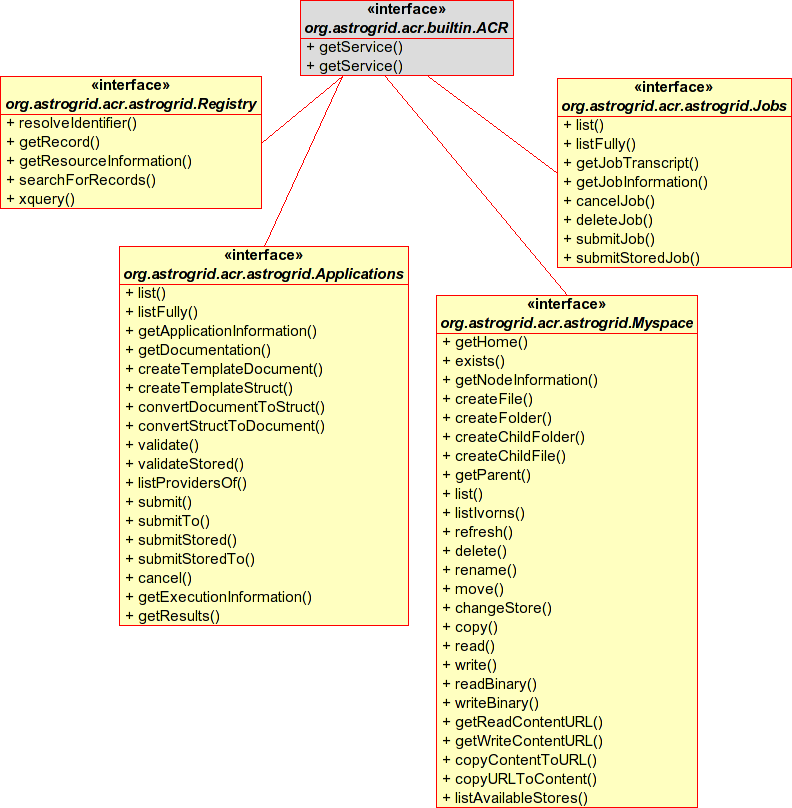
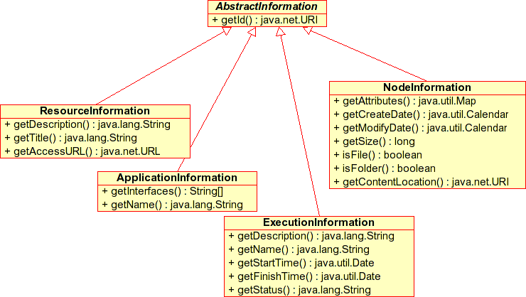

Astrogrid Module
Interfaces to the components in the astrogrid module -which can be used to access AstroGrid services

The available services are
- {@link org.astrogrid.acr.astrogrid.Community}
- Authentication and Identifiy (Not shown above)
- {@link org.astrogrid.acr.astrogrid.Registry}
- Search for and resolve services and data sources
- {@link org.astrogrid.acr.astrogrid.Myspace}
- Read and write resources in distributed storage
- {@link org.astrogrid.acr.astrogrid.Applications}
- Search for and execute queries and applications
- {@link org.astrogrid.acr.astrogrid.Jobs}
- Manage distributed workflow execution
- {@link org.astrogrid.acr.astrogrid.RemoteProcessManager}
- Generalized remote process creation, monitoring, control (not shown)
Some methods of the above services return descriptions of astrogrid resources - jobs, servers, files, etc.
These descriptions are represented as information beans that form the following inheritance hierarchy:
